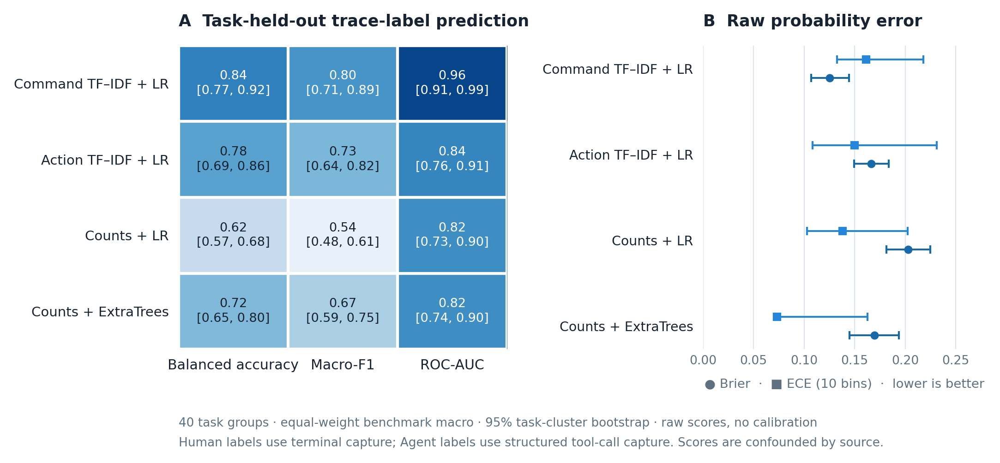

本地 Human / Agent 识别
使用采集格式匹配的标注轨迹，从命令和动作中识别执行方式。
识别方法
local_mode_detector 是一个有监督二分类基线：用同一 source_format 的已标注轨迹训练，再为同格式的无标签轨迹输出 Human/Agent 标签和 Agent 倾向分数。分数表示当前模型对记录轨迹的估计，不能证明实际执行者身份。
方法流程
| 环节 | 实现与约束 |
|---|---|
| 训练数据 | 带 Human/Agent 标签的轨迹；至少 8 条，必须包含两类标签，且训练记录使用同一 source_format。 |
| 特征 | 命令名称与粗粒度动作分别加字段前缀，再提取 unigram/bigram TF‑IDF；不使用题目文本、提示词、模型名、时间戳或路径。 |
| 分类器 | 类别平衡的逻辑回归（C=1）；以 0.5 为阈值输出预测类别。 |
| 输出与限制 | 返回预测标签和未经校准的原始 agent_like_score。采集格式不匹配或没有已学习特征词项时返回 unknown。 |
Python API
Python API训练与识别from attackagent import fit_detector, predict_modes
# training_records: labeled Human/Agent traces in one source format
detector = fit_detector(training_records)
scores = predict_modes(detector, unlabeled_traces)
for score in scores:
print(score.trace_id, score.prediction, score.agent_like_score, score.available)API 需要与待识别轨迹采集格式相匹配的标注样本。原始分数是模型输出，不能当作校准置信度或执行者身份凭证。
实验设计与结果
在固定版本的公开 Cyber Task Horizons 轨迹上比较四种本地 CPU 基线。命令名称 TF‑IDF + 逻辑回归在本轮对照中最高：题目组平衡准确率 84.4%（95% 任务簇区间 76.6%–91.5%）。这项探索性结果预测的是发布数据中的轨迹标签，无法将执行者差异与采集格式差异分开。
数据集组成
| 基准 | 题目组 | Human | Agent | 轨迹合计 |
|---|---|---|---|---|
| InterCode-CTF | 27 | 40 | 81 | 121 |
| CyBench | 6 | 8 | 18 | 26 |
| NYU CTF Bench | 7 | 9 | 21 | 30 |
| 合计 | 40 | 57 | 120 | 177 |
评估协议
采用五折 GroupKFold，确保同一基准/题目组的轨迹只出现在同一折；特征仅在训练折拟合，判定阈值为 0.5。先在各基准内对题目组等权，再对基准等权计算指标。95% 区间来自固定折外预测上的 5,000 次基准分层任务簇 bootstrap，不包含重新训练带来的不确定性；未拟合概率校准器。
基线结果矩阵
| 对照方法 | 特征表示 | 平衡准确率（95% CI） | Macro-F1 | ROC-AUC | Brier ↓ | ECE ↓ |
|---|---|---|---|---|---|---|
command_tfidf_logistic | 命令名称 unigram/bigram TF‑IDF + 逻辑回归 | 84.4% (76.6–91.5) | 80.4% | 95.7% | 0.125 | 0.161 |
action_tfidf_logistic | 粗粒度动作 unigram/bigram TF‑IDF + 逻辑回归 | 77.7% (69.2–85.5) | 72.9% | 83.5% | 0.166 | 0.150 |
count_action_logistic | 命令数与动作比例 + 逻辑回归 | 62.2% (56.9–68.3) | 53.7% | 81.9% | 0.203 | 0.138 |
count_action_extra_trees | 命令数与动作比例 + ExtraTrees | 72.3% (65.4–79.7) | 66.8% | 81.9% | 0.169 | 0.073 |
平衡准确率是两类召回率的平均值；Macro-F1 是两类 F1 的平均值。Brier 与 ECE 越低越好，但数值不表示概率已校准。图中展示各指标的任务簇区间。

84.4% 对应的是“仅命令”对照模型，不是库 API 当前“命令 + 动作”实现的直接性能估计。
数据中的 Human 标签来自终端采集，Agent 标签来自结构化工具调用；标签与采集方式完全绑定。因此结果衡量的是对这批轨迹标签的预测，不是排除了接口影响后的执行者识别。数据也没有 Script 轨迹或真实攻击活动标签。